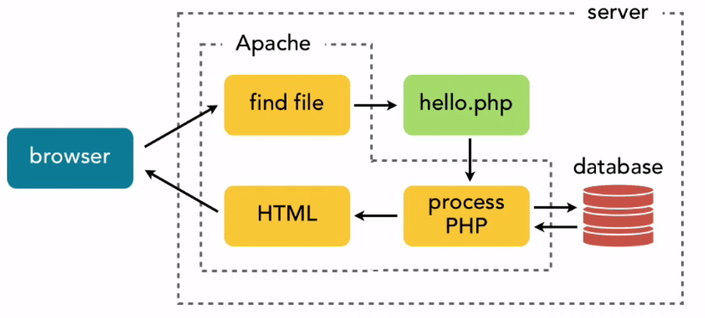
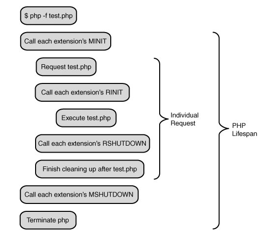

PHP Scrap
Table of Contents
- 1 在 2016 年做 PHP 开发
- 2 什么是 CGI, FastCGI, PHP-CGI, PHP-FPM, Spawn-FCGI？
- 3 Difference between PHP-CGI and PHP-FPM
- 4 浅谈 PHP FastCGI 和 PHP-FPM
- 5 CGI、FastCGI 和 PHP-FPM 关系图解
- 6 PHP-FPM: The Future of PHP Handling
- 7 Optimizing PHP-FPM for High Performance
- 8 Moving from mod_php to PHP-FPM
- 9 Migrating from mod_php to PHP-FPM
- 10 深入理解 PHP 内核之 SAPI 探究
- 11 提高 PHP 代码质量 36 计
- 12 Fastest way to determine where PHP script exits?
- 13 Restart PHP Service Command
1 在 2016 年做 PHP 开发
对性能要求比较高，或者需要开发 socket 相关功能可以使用的框架：
- Phalcon
- Yaf
- Swoole
- Workerman
- ReactPHP
- Kraken
使用 ORM 工具管理数据库，ORM 可以像操作类一样操作数据库，可以快速创建出一个表的 CRUD 表单，或使用少量代码实现对表的各种 API 操作。常用的 ORM 工具：
- Doctrine
- Propel
- Eloquent
Doctrine 可以通过 PHP 类定义一个表的实体结构（ entity ）自动生成 DDL 。当表结构有变更， Doctrine 会生成所对应的更新 DDL。Doctrine 配合一些工具，可以快速生成基于表的后台管理界面，实现一个基本可用的网站后台。
Doctrine 一般是以 service 的方式被用在项目中的。Service 可以理解为第三方应用，通过 service 的方式被注册到程序中，需要时进行调用即可。 Service 一般支持 IoC 和 DI ，对程序的升级也会很有帮助。
Continuous Integration 指的是自动化处理分支的合并、运行测试用例、代码检查、部署等操作，可以使用：
- Jenkins
- Bamboo
- CircleCI
为了及时获知 CI 结果，可以把 CI 系统和 Slack 等 IM 工具整合。
为了监控程序的运行问题，可以搭建一套 ELK（Elasticsearch, Logstash and Kibana）系统进行日志的存储、搜索、展示，也可以使用：
- Sentry
- log.io
HipHop 是 Facebook 开发的用于加速 PHP 运行的工具，核心原理是把 PHP 代码编译成可以直接执行的程序。但因为 HipHop 在每次 PHP 代码改动后都需要重新编译，所以 Facebook 转而开发了 HHVM，其核心原理类似，但不再需要编译过程，可以直接执行 PHP 代码。
1.1 Links
2 什么是 CGI, FastCGI, PHP-CGI, PHP-FPM, Spawn-FCGI？
2.1 CGI
CGI (Common Gateway Interface) 是 Web 服务器与其他程序之间传递信息的一种工具。CGI 规范允许 Web 服务器执行外部程序，并将它们的输出发送给客户端。CGI 是语言无关的，只要这种语言具有标准输入、输出和环境变量。
使用 CGI 需要为每个用户请求创建单独的子进程，CGI 解释器的反复加载是性能低下的主要原因。
2.2 FastCGI
FastCGI 是将 CGI 解释器进程保持在内存中，即常驻（long-live）型的 CGI，不需要为每次调用 fork （即 CGI 为人诟病的 fork-and-execute 模式)，因此性能更高。同时 CGI 解释器接受 FastCGI 进程管理器调度，可以提供伸缩性、fail-over 特性等。
FastCGI 支持分布式计算, 即 FastCGI 程序可以在 Web 服务器以外的主机上执行，并接受来自多个 Web 服务器的请求。
2.2.1 工作原理

- Web 服务器启动时载入 FastCGI 进程管理器，如 IIS ISAPI、Apache Module。
- FastCGI 进程管理器初始化，启动多个 CGI 解释器子进程，如 php-cgi，并等待来自 Web 服务器的连接。
- 客户端请求到达 Web 服务器。
- FastCGI 进程管理器选择并连接到一个 CGI 解释器，Web 服务器将 CGI 环境变量和标准输入发送到 FastCGI 子进程。
- FastCGI 子进程完成处理，将标准输出和错误信息从同一连接返回 Web 服务器。
- FastCGI 子进程关闭连接。
- FastCGI 子进程等待处理来自 FastCGI 进程管理器的下一个连接。
上述过程如果使用普通 CGI，每一个 Web 请求 PHP 都必须解析 php.ini ，载入全部扩展，初始化全部数据结构。使用 FastCGI，所有这些都只在进程启动时发生一次。另外，还可以使用持久化数据库连接。
2.3 PHP-FPM
PHP-FPM (FastCGI Process Manager) 是用于 PHP 的 FastCGI 管理器，提供更好的 PHP 进程管理方式，可以平滑重载 PHP 配置。
2.4 Spawn-FCGI
Spawn-FCGI 是一个通用的 FastCGI 管理器。
3 Difference between PHP-CGI and PHP-FPM
When running PHP through web server, there are 2 distinct options: as PHP-CGI, or as PHP-FPM.
3.1 PHP-CGI
CGI is a specification “protocol” for transferring information between a web server and a CGI program. A CGI program is any program designed to accept and return data that conforms to the CGI specification. Basically, it’s a way to run a server-side script (PHP, Perl, Python) when an HTTP request comes.
Running PHP as CGI means telling the web server the location of the PHP executable, and the server runs that executable, giving it the script being called by the HTTP request. That means each time a PHP script is executed, a new procress needs to be created, in which PHP needs to read php.ini and initialize settings, load all extensions, and then parse the script. This is why running PHP as CGI is highly inefficient and a legacy way.
Benefit of CGI: it keeps the code execution separate from the web server, which provides better security. For example, a buggy or insecure PHP script executed via PHP-CGI cannot corrupt or affect the security of files outside of the domain it’s hosted on. It also means that the PHP interpreter is only called when required, thereby allowing static content to be served solely by the web server.
Another benefit of CGI is that PHP reads its settings every time a page is requested, thus it's preferable if you are testing settings and want to see instant responses. With PHP running as a module, any change made in php.ini does not kick in until web server is restarted.
3.2 PHP-FPM
PHP-FPM (PHP FastCGI Process Manager) is PHP's FastCGI implementation. It has better performance and lower resource consumption. PHP-FPM runs as a standalone FastCGI server and Apache connects to the server using mod_fcgid or mod_fastcgi module.
PHP-FPM features:
- Adaptive process spawning.
- Advanced process management with graceful stop/start.
- Supports starting workers with different uid/gid/chroot/environment and
php.ini. - Enhancements to FastCGI, such as
fastcgi_finish_request()which finishes request and flushes all data while continuing to do something time-consuming (video converting, stats processing, etc.)
3.3 Links
4 浅谈 PHP FastCGI 和 PHP-FPM
4.1 mod_php 模式
当使用 mod_php 模式时，Apache 将 PHP 作为模块来运行，配置如下：
LoadModule phpX_module modules/mod_php.so AddType application/x-httpd-php .php <IfModule dir_module> DirectoryIndex index.html index.htm index.php index.phtml </IfModule>
当请求 PHP 脚本时，Apache 调用 phpX_module ，而 phpX_module 通过 SAPI 解析 PHP 代码：

SAPI 是 PHP 与其他应用，如 Web 服务器，进行数据交互的接口。因此在 mod_php 模式下 Apache 调用 PHP 的过程为：
Apache -> httpd -> php_module -> SAPI -> PHP
mod_php 模式下，Apache 为每个请求产生一个进程来连接 PHP 并通过 SAPI 完成请求，在高并发的情况下，服务器负载会很高。
4.2 mod_fastcgi 模式
当使用 mod_fastcgi 模式时，Apache 通过 FastCGI 服务器调用 PHP。
FastCGI 本身是语言无关的接口，PHP-FPM 是 PHP 自带的 FastCGI 实现。
4.3 Links
5 CGI、FastCGI 和 PHP-FPM 关系图解
在网站架构中，Web Server（如 Apache）只是内容的分发者。
如果客户端请求的是 index.html ，Web Server 会从文件系统中加载这个文件，发送给浏览器，这里分发的是静态数据。
如果客户端请求的是 index.php ，根据配置，Web Server 发现不是静态文件，它会将此请求进行简单处理，然后调用 PHP 解析器（属于一种 CGI）。PHP 解析器加载 php.ini ，初始化执行环境，然后处理请求，再以 CGI 规定的格式返回处理结果，退出进程，Web Server 把结果返回给浏览器。

| CGI | Web Server 与 Web Application 之间进行数据交换的协议。 |
|---|---|
| FastCGI | 同 CGI，但在性能上进行了优化。SCGI 协议与 FastCGI 类似。 |
| PHP-CGI | PHP 作为 Web Application 为 Web Server 提供的实现 CGI 协议的接口程序。 |
| PHP-FPM | 同 PHP-CGI，但实现的是 FastCGI 协议，额外还提供了更智能的任务管理。 |
PHP-CGI 是 PHP 官方实现的 CGI 接口，但其性能较差：
- 修改
php.ini后，需重启 PHP-CGI 进程才能生效，不可以平滑重启。 - PHP-CGI 进程进程意外退出后无法自动恢复，导致 PHP 请求无法处理。
鉴于以上缺点，很多人选择使用 Module 方式，直到 2004 年 PHP-FPM 的出现，它克服了 PHP-CGI 的问题，具有更优的性能和特性，如进程管理。PHP 5.3 之后，PHP-FPM 成为了 PHP 自带的 FastCGI 管理器。
5.1 Links
6 PHP-FPM: The Future of PHP Handling
6.1 PHP-FPM’s Architecture
As a high-level programming language, PHP scripts require compiling before a web server’s underlying processor hardware can understand it. Traditionally, the web server handles compiling PHP scripts through integrated web server modules such as single user PHP (suPHP), Common Gateway Interface (CGI), or Dynamic Shared Object (DSO, also known as mod_php). When using these PHP handlers, the web server is tightly coupled to processing PHP scripts:
- Web server compiles and executes the PHP scripts as part of the individual web server’s processes.
- PHP is executed using the web server processes’ permissions and ownership configurations.
PHP-FPM provides a new experience that addresses many of the shortcomings of the previously mentioned PHP handlers. Internally, PHP-FPM is organized as a master process managing pools of worker processes.
- PHP-FPM service listens for requests on the host server’s network ports or through Unix sockets.
- When web server receives a request for a PHP script, it uses a proxy FastCGI connection to forward the request to the PHP-FPM service.
- When PHP-FPM receives a proxied connection, a free PHP-FPM worker accepts the web server’s request.
- PHP-FPM then compiles and executes the PHP script, sending the output back to the web server.
- PHP-FPM worker finishes handling a request, system releases the worker and waits for new requests.
PHP-FPM master process dynamically creates and terminates worker processes (within configurable limits) as traffic increases and decreases. Worker processes also periodically terminate and respawn after serving a fixed number of requests. This helps to prevent memory leaks during the processing of PHP scripts. Each PHP user can have its own separate pool of worker processes.
PHP-FPM’s architecture shares design similarities with event-driven web servers such as the Nginx web server and the Apache with the Event MPM (Multi-Processing Module). Processing PHP scripts in this way allows for much higher processing performance, improved security, better stability, and greater configurability.
6.2 Performance
6.2.1 More Efficient PHP Handling
PHP-FPM can reuse worker processes repeatedly instead of having to create and terminate them for every single PHP request.
6.2.2 Opcode Caching
With opcode caching, the resulting opcode from compiled PHP scripts gets cached in memory. If a request comes in for a PHP script, PHP-FPM quickly checks for previously cached copies, and if it finds a cached copy, PHP-FPM executes the script using the cached opcode immediately. This removes the need for reading the script’s source code from disk and compiling the PHP source code to opcode. Reading data from memory is orders of magnitude quicker than reading the same data from filesystem. Time and resources saved by not having to compile the PHP source code to opcode is more significant when the same set of PHP scripts are requested repeatedly and frequentely.
Opcode caching has no effect when using the suPHP and CGI handlers due to the way these handlers manage their memory usage. The DSO handler supports opcode caching, but the DSO module requires running PHP scripts as the Apache user, which can create a security risk.
6.3 Security
PHP-FPM provides an enormous security benefit over other PHP handlers by maintaining isolated PHP processing for each user.
When using opcode caching, the server’s main PHP config should have these settings configured for security:
opcache.validate_root = true opcache.validate_permission = true
These settings prevent users from obtaining access to other users’ opcode caches.
6.4 Stability
When web servers handle requests for PHP scripts in their own processes, additional web server processes have to be created. As traffic for PHP scripts increases, the workload can come to the point where the host server becomes unresponsive.
PHP-FPM’s architecture prevents PHP processing from overwhelming a server. It has hard limit on how many requests for PHP scripts it can process simultaneously. When PHP-FPM’s worker processes become fully utilized, additional requests for PHP scripts will result in timeouts or gateway errors, instead of using up server resources. This behavior is far better than allowing the hosting server to become entirely unresponsive. Additionally, site owners can create custom 503 status pages to improve the user experience versus a non-descript white error page.
Properly configuring PHP-FPM to provide enough workers is key. Too few workers can result in excessive 503 or 504 HTTP responses. This problem occurs more frequently with single-tenant servers running PHP-FPM with a single pool of worker processes for all websites, such as a virtual private server or a dedicated server.
6.5 Configurability
As a separate service, PHP-FPM provides more configuration options than other PHP handlers. Many of these configuration options can also be defined differently for each website on the server. For example:
- User and group for running scripts
- Worker Limits
- Worker creation strategy
- Slow PHP script logging
- Status reports
- Connection settings (e.g. listening on network port or on Unix socket)
- PHP runtime configuration values
6.6 Links
7 Optimizing PHP-FPM for High Performance
7.1 What is PHP-FPM?
When browser sends a request to a server running PHP, the first point of contact is the HTTP server. The web servers then decide how to connect to PHP, and pass on the request type, data, and headers to it.

How exactly the web server connects to PHP has evolved, but roughly speaking, during the time that Apache dominated as the web server of choice, PHP was a module included inside the server. Whenever a request is received, server starts a new process, which will automatically include PHP, and get it executed. This method was called mod_php.
mod_php had its limitations, which Nginx overcame with PHP-FPM. In this case, instead of a single process, PHP runs on FPM (Fast Process Manager) which can be thought of as a server itself. PHP-FPM spawns, controls and kills PHP processes. In other words, the responsibility of managing PHP processes moves from web server to PHP-FPM. Web server doesn’t care about where PHP is and how it is loaded, it simply passes requests to it via PHP-FPM.
An example of Nginx PHP-FPM setting:
location ~ \.php$ {
try_files $uri =404;
fastcgi_split_path_info ^(.+\.php)(/.+)$;
fastcgi_pass unix:/run/php/php7.2-fpm.sock;
fastcgi_index index.php;
include fastcgi_params;
fastcgi_param SCRIPT_FILENAME $document_root$fastcgi_script_name;
}
The line fastcgi_pass unix:/run/php/php7.2-fpm.sock; tells Nginx to communicate with the PHP process through the socket named php7.2-fpm.sock. So, for every incoming request, Nginx writes data through this file, and on receiving the output, sends it back to the browser.
7.2 Why optimize PHP-FPM?
Nginx was built for handling thousands of connection at the same time, but if the same isn’t true of the PHP setup, it wastes resources as Nginx will be blocked by PHP to finish current process and accept the next, conclusively negative any advantages that Nginx was built to provide.
7.3 How to optimize PHP-FPM?
In PHP-FPM's config file, e.g. /etc/php/7.2/fpm/php-fpm.conf :
emergency_restart_threshold 10 emergency_restart_interval 1m
These 2 lines means if 10 child processes fail within 1 minute, php-fpm main process should restart. PHP is a short-lived process that does leak memory, so restarting the main process in cases of high failure can solve a lot of problems.
process_control_timeout 10s
This means the child processes should wait for this much time before executing the signal received from the parent process. This is useful, e.g. when child processes are in the middle of something when the parent processes send a KILL signal. With 10 seconds on hand, they’ll have a better chance of finishing their tasks and exiting gracefully.
PHP-FPM also has config file per pool of processes, e.g. /etc/php/7.2/fpm/pool.d/www.conf which contains user and group settings:
user = www-data group = www-data
And process manager (pm) settings:
pm = dynamic pm.max_children = 5 pm.start_servers = 3 pm.min_spare_servers = 2 pm.max_spare_servers = 4 pm.max_requests = 200
static |
Number of child processes is fixed to pm.max_children. |
|---|---|
dynamic |
Number of child processes is set dynamically based on: |
pm.max_children, pm.start_servers, pm.min_spare_servers, pm.max_spare_servers |
|
ondemand |
Process spawn on demand, no initial processes when server starts. |
For a website with low traffic, dynamic is a waste of resources. Assuming pm.min_spare_servers is 3, then 3 PHP processes will be created and maintained even when there’s no traffic. In such cases, ondemand is a better option, letting the system decide when to launch new processes.
On the other hand, websites that handle large amounts of traffic or must respond quickly will get punished by this setting. Creating a new PHP process, making it part of a pool, and monitoring it, is extra overhead that is best avoided. static fixes the number of child processes, letting maximum system resources to be used in serving the requests rather than managing PHP.
8 Moving from mod_php to PHP-FPM
After running PHP on Apache for many years with mod_php, there is now a clear reason to switch to PHP-FPM:
mod_phponly works well with Apache’s Prefork MPM. Why shouldn’t I use Apache2 with a threaded MPM?- Starting with httpd 2.4.27, prefork does not support HTTP/2. Using PHP-FPM means we can use for Apache’s worker or event MPM, which in turn means we can support HTTP/2.
8.1 Move Apache Functions
Check if you’re using any of PHP’s Apache Functions, as these won’t be available once you stop using mod_php.
8.2 Move PHP Settings to .user.ini
If you’re currently changing any PHP settings in Apache configuration files, move these to .user.ini files which are picked up by PHP-FPM. For example, move:
php_value include_path ".:/php_lib" php_value auto_prepend_file "autoload.php"
To an equivalent:
include_path = '.:/php_lib' auto_prepend_file = 'autoload.php'
8.3 Switch PHP Package
Run the following as root:
dnf install php-fpm dnf remove php # Package php is actually mod_php in Fedora systemctl start php-fpm systemctl enable php-fpm
8.4 Tweak Default httpd Configuration
To avoid PHP-FPM gets called for files that don't exist (httpd logs like AH01071: Got error ‘Primary script unknown):
<FilesMatch \.php$> <If "-f %{SCRIPT_FILENAME}"> SetHandler "proxy:unix:/run/php-fpm/www.sock|fcgi://localhost" </If> </FilesMatch>
8.5 Switch MPM
# LoadModule mpm_prefork_module modules/mod_mpm_prefork.so LoadModule mpm_event_module modules/mod_mpm_event.so
8.6 Restart httpd
apachectl configtest # Syntax OK systemctl restart httpd
Note that PHP logs are now in /var/log/php-fpm.
8.7 Links
9 Migrating from mod_php to PHP-FPM
Apache PHP module, a.k.a. mod_php is the module that allows Apache to interpret PHP files, and it’s known to suffer from memory problems. Here is what I did to migrate to PHP-FPM on Ubuntu 16.04 and using PHP 7.0.
sudo apt-get remove libapache2-mod-php7.0 # Remove mod_php sudo apt-get -y install php7.0-fpm libapache2-mod-fastcgi # Install php-fpm sudo a2dismod mpm_worker mpm_prefork # Disable conflicting modules sudo a2enmod actions fastcgi alias rewrite mpm_event # Enable required modules
<IfModule mod_fastcgi.c> SetHandler php7-fcgi .php Action php7-fcgi /php7-fcgi virtual Alias /php7-fcgi /usr/lib/cgi-bin/php7-fcgi FastCgiExternalServer /usr/lib/cgi-bin/php7-fcgi -socket /var/run/php/php7.0-fpm.sock -pass-header Authorization -idle-timeout 3600 <Directory /usr/lib/cgi-bin> Require all granted </Directory> </IfModule>
Then enable the configuration and restart the services to see the changes:
sudo a2enconf php7.0-fpm # Enable php-fpm configuration service apache2 restart service php7.0-fpm restart
9.1 Links
10 深入理解 PHP 内核之 SAPI 探究
10.1 SAPI
PHP 通过 SAPI 提供了一组接口，供应用和 PHP 内核之间进行数据交互。
| 命令行调用 PHP | Shell 通过 SAPI 传入参数 -> Zend 引擎执行 PHP 代码 -> 结果返回给 Shell -> Shell 输出结果到 stdout |
|---|---|
| Apache 调用 PHP | Web 服务器 通过 SAPI传入数据 -> Zend 引擎执行 PHP 代码 -> 结果返回给 Apache -> Apache 输出结果到页面 |
PHP 提供很多种形式的 SAPI 接口，常用的只有 5 种形式：
- CLI/CGI
- FastCGI
- Multiprocess
- Multithreaded
- Embedded
PHP 函数查看当前 SAPI 接口类型：
php_sapi_name(): string
10.2 PHP 生命周期
无论使用哪种 SAPI，PHP 执行都经过 4 个阶段，在每个阶段，PHP 引擎调用每个模块的回调函数：
| MINT | Module init | PHP_MINIT_FUNCTION() |
|---|---|---|
| RINT | Request init | PHP_RINIT_FUNCTION() |
| RSHUTDOWN | Request shutdown | PHP_RSHUTDOWN_FUNCTION() |
| MSHUTDOWN | Module shutdown | PHP_MSHUTDOWN_FUNCTION() |
- MINT 阶段初始化扩展内部变量、分配资源和注册资源处理器，在整个 PHP 实例生命周期内，该过程只执行一次。
- RINT 阶段创建 PHP 运行环境，设定环境变量，分配资源等。
- RSHUTDOWN 阶段进行清理、垃圾收集，对请求期间用到的变量执行
unset()。请求完成可能是执行到脚本完成，也可能是调用die()或exit()函数完成。 - MSHUTDOWN 阶段对模块进行回收处理。
10.3 CLI/CGI 模式
CLI 和 CGI 都属于单进程模式，PHP 的生命周期在每一次请求中完成，即每次执行 PHP 脚本，都会执行上面提到的四个阶段。

10.4 Links
11 提高 PHP 代码质量 36 计
11.1 不要使用相对路径
require_once('../../lib/some_class.php');
该写法的缺点：
- 首先查找指定的 PHP 包含路径，然后查找当前目录，因此会检查过多路径。
- 如果该脚本被另一目录的脚本包含，它的基本目录变成了另一脚本所在的目录。
- 当定时任务运行该脚本，它的上级目录可能就不是工作目录了。
使用绝对路径：
define('ROOT', '/var/www/project/'); require_once(ROOT . '../../lib/some_class.php');
绝对路径也可能会改变，继续改进：
define('ROOT', pathinfo(__FILE__, PATHINFO_DIRNAME)); require_once(ROOT . '../../lib/some_class.php');
这样无论移到哪个目录，甚至外网的服务器上，代码都无须更改便可正确运行。
11.2 不要直接使用 require 和 include
在脚本头部引入文件、库、工具文件和助手函数等：
require_once('lib/Database.php'); require_once('lib/Mail.php'); require_once('helpers/utitlity_functions.php');
使用助手函数包含文件，可以更灵活地改变文件路径，且代码更具可读性：
function load_class($class_name) { $path = ROOT . '/lib/' . $class_name . '.php'; if (file_exists($path)) { require_once($path); } } load_class('Database'); load_class('Mail');
更多扩展：
- 在多个目录查找文件，可以覆盖。
- 可使用类似的函数加载 HTML 文件等。
11.3 保留调试代码
define('ENVIRONMENT' , 'development'); // 开发环境 define('ENVIRONMENT' , 'production'); // 生产环境 if (!$db->query($query)) { if (ENVIRONMENT == 'development') { echo "$query failed"; } else { echo "Database error. Please contact administrator"; } }
11.4 Links
12 Fastest way to determine where PHP script exits?
function write_stack() { $GLOBALS['debug_stack'] = debug_backtrace(); } function dump_stack() { var_dump($GLOBALS['debug_stack']); } declare(ticks=1); // Increase tick to make execution faster register_tick_function('write_stack'); register_shutdown_function('dump_stack');
13 Restart PHP Service Command
PHP is associated with either web server, or external FastCGI process manager.
13.1 Restarting web server
$ /etc/init.d/apache2 restart $ /etc/init.d/nginx restart $ /etc/init.d/lighttpd restart $ service httpd restart $ service nginx restart $ service lighttpd restart
13.2 Restart PHP-FAM Fastcgi
$ /etc/init.d/php-fpm restart $ service php-fpm restart